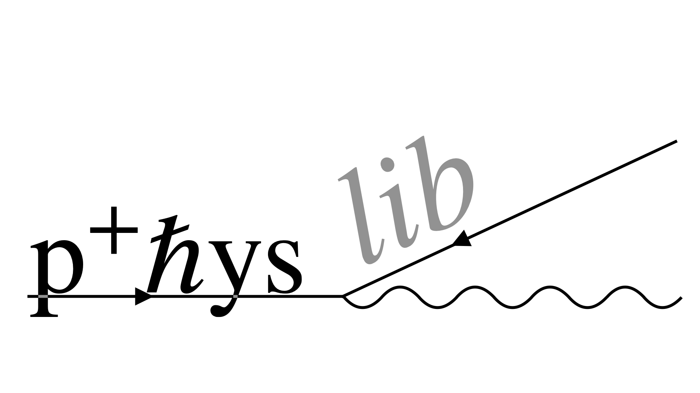
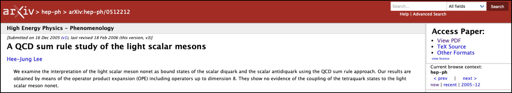
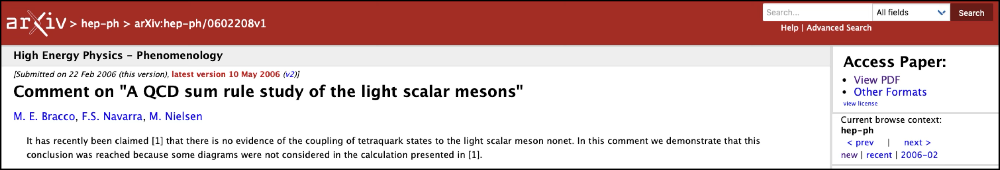
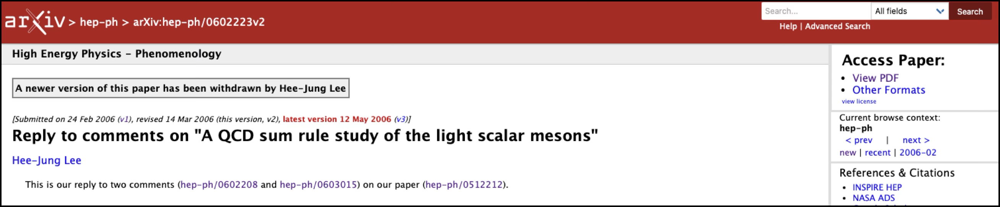
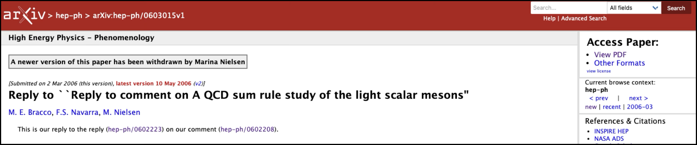
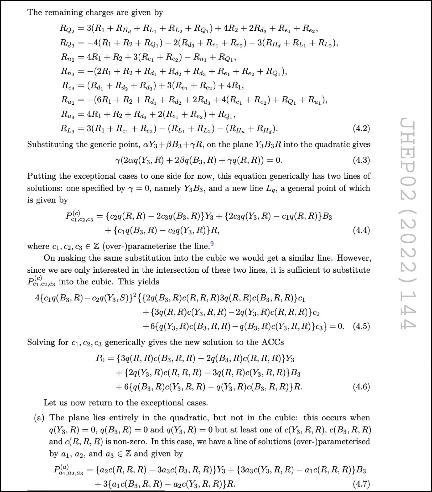

Digitalizing physics into Lean 4
IAMP 2026
Joseph Tooby-Smith, University of Bath
Slides at: https://josephtoobysmith.com/Slides/IAMP.html
Talk overview
The arXiv paper hep-ph/0512212
$E = A_1 + A_2 + A_3 + \ldots + A_n$
$E = A_1 + A_2 + A_3 + \ldots + A_n + B_1 + B_2$
$E = A_1 + A_2 + A_3 + \ldots + A_n$
$E = A_1 + A_2 + A_3 + \ldots + A_n + B_1 + B_2$




… and one of my own papers

The key concept
Trust
Papers have errors
Even carefully done physics contains mistakes — as we just saw.
So a result starts from a position of low trust.
Trust in academia
Three traditional bases rebuild it:
Trust in academia
Three traditional bases rebuild it:
Trust in academia
Three traditional bases rebuild it:
An AI revolution
→ we need a revolution in trust.
What can we do to
increase trust?
Interactive theorem provers
A scalable way to increase trust.
Interactive theorem provers
A programming language in which you can write mathematical theorems and definitions, with mathematical correctness and consistency guaranteed.
Interactive theorem provers
Rocq
Isabelle/HOL
Lean
Agda
Interactive theorem provers
Beyond trust — what else do they give you?
Lean's rise in popularity
Two engines: Mathlib, a vast library to build on, and increasingly capable AI.
Lean's rise in popularity
- • A monolithic library of mathematics formalized in Lean
- • Started in 2017
- • Over 500 contributors, 100,000 definitions and 200,000 theorems